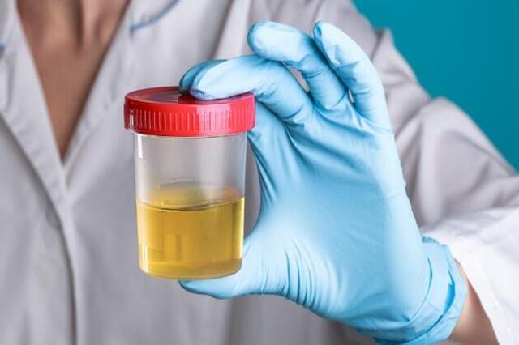

¿Cómo tomar una muestra de orina y heces?
La recolección adecuada de muestras de heces y orina es crucial para obtener resultados precisos en los análisis de laboratorio. Estos exámenes son fundamentales para diagnosticar diversas condiciones de salud y monitorear el estado general del paciente. A continuación, te explicamos cómo realizar este procedimiento de manera correcta y efectiva.
Recolección de Muestra de Heces
Prepara el equipo necesario
Asegúrate de tener un frasco estéril, que generalmente es proporcionado por el laboratorio. Este frasco está diseñado para evitar la contaminación de la muestra. Puedes necesitar una espátula o cuchara pequeña (normalmente viene con el frasco) para facilitar la recolección.
Evita la contaminación
Es fundamental que la muestra no entre en contacto con agua, orina, papel higiénico o cualquier otra sustancia. Para recolectar la muestra, puedes usar un recipiente limpio o una hoja de papel sobre el inodoro para facilitar la recogida.
Si tienes un inodoro con tapa, asegúrate de que esté limpio antes de usarlo.
Cantidad necesaria
Generalmente, una pequeña cantidad de heces (aproximadamente el tamaño de una cucharadita) es suficiente para el análisis. Evita llenar el frasco por completo, ya que esto no es necesario.
Cierre adecuado
Tapa el frasco herméticamente para evitar derrames y asegúrate de que esté bien cerrado. Si es necesario, utiliza una etiqueta o marcador para rotular el frasco con tus datos personales, incluyendo tu nombre, fecha y hora de recolección.
Condiciones de almacenamiento
Si no puedes llevar la muestra al laboratorio de inmediato, es recomendable almacenar el frasco en el refrigerador, pero no lo congeles. La muestra debe ser entregada al laboratorio lo antes posible, preferiblemente en un plazo de dos horas, para evitar la degradación.
Entrega rápida
Lleva la muestra al laboratorio lo más pronto posible. Esto asegura que los análisis se realicen en condiciones óptimas, manteniendo la calidad y validez de los resultados.
Recolección de Muestra de Orina
Preparativos previos
La mejor muestra para análisis es la orina de la primera micción de la mañana, ya que está más concentrada y proporciona resultados más confiables. Esto es especialmente importante en pruebas como el examen general de orina y el urocultivo.
Limpieza previa
Lávate las manos con agua y jabón antes de la recolección para reducir el riesgo de contaminación. También es recomendable limpiar el área genital con agua y jabón, o utilizar toallitas desinfectantes, especialmente en el caso de mujeres.
Muestra de orina media
Al iniciar la micción, orina un poco en el inodoro para eliminar cualquier bacteria que pueda estar presente en la uretra. Después, coloca el frasco estéril en la corriente de orina y recoge la muestra durante la micción, asegurándote de llenar el frasco con aproximadamente 50-100 ml. No es necesario llenar el frasco por completo.
Cierre adecuado
Tapa el frasco inmediatamente después de recolectar la muestra y asegúrate de que esté bien cerrado. Al igual que con la muestra de heces, es importante rotular el frasco con tu nombre, fecha y hora de recolección.
Condiciones de almacenamiento
Si no puedes entregar la muestra al laboratorio de inmediato, es recomendable refrigerarla, pero no la congeles. La orina debe ser entregada en un plazo de dos horas después de la recolección para asegurar resultados precisos.
Entrega rápida
Al igual que con las muestras de heces, es importante llevar la orina al laboratorio lo antes posible. Esto ayudará a garantizar que las pruebas se realicen de manera adecuada y que los resultados sean confiables.
Conclusión
Tomar muestras de heces y orina correctamente es fundamental para obtener resultados precisos en los análisis de laboratorio. Siguiendo estas pautas, puedes asegurarte de que tus muestras sean adecuadas y de que los resultados contribuyan a un diagnóstico y tratamiento adecuados. No dudes en consultar a un profesional de la salud si tienes dudas o preguntas sobre el proceso.